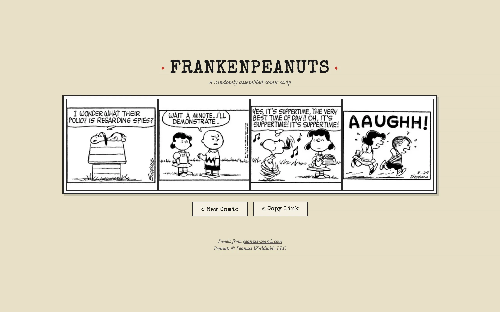

Peanuts ran daily from October 2, 1950 to February 13, 2000. That's nearly 18,000 strips, each drawn by Charles Schulz alone. FrankenPeanuts picks four panels at random from that archive and stitches them into a new four-panel comic. The results range from accidentally poetic to completely incoherent. Every reload is a new strip.

The panel extraction pipeline
The original version of FrankenPeanuts fetched full strips from peanuts-search.com at runtime and split them into panels in the browser using Canvas pixel analysis. This worked but was fragile: the cross-origin image fetches required a CORS proxy, panels loaded slowly, and some strips would fail to load entirely. The refactored version moves all the panel extraction to a batch pipeline that runs once, ahead of time, and stores the results.
A Python script iterates through every weekday between October 2, 1950 and February 13, 2000 (Sundays are skipped since Peanuts didn't publish daily strips on Sundays). For each date, it fetches the strip image from peanuts-search.com and runs the panel detection algorithm. Detected panels are cropped and saved as individual JPEG files in a panels/ directory. A manifest.json file maps each date to its extracted panels with filenames and indices.
How panels are detected
The detection algorithm works on the raw pixel data using NumPy and Pillow. It samples the middle 80% of the strip vertically (avoiding header and footer artifacts) and computes a per-column darkness metric. Panel gutters appear as columns where the darkness value spikes, because the gutter lines are dark against the white background. The algorithm identifies these spikes, filters out edge artifacts, and uses the gutter positions to split the strip into individual panel regions.
Panels with extreme aspect ratios (outside the 0.55 to 1.45 range) are discarded. This filters out the oddly shaped panels that show up occasionally in weekday strips and would look wrong in the final four-panel grid.
Running at scale
Processing 50 years of daily strips is a lot of images. The script uses concurrent HTTP requests with connection pooling and configurable delays to avoid overwhelming the source server. A GitHub Actions workflow parallelizes the job across 10 workers, each handling a different date range. After all chunks complete, a merge step combines the partial manifests into a single manifest.json and commits the result back to the repo. The pipeline is resumable: if it gets interrupted, it checks the existing manifest and skips dates that have already been processed.

{kind=link}
The frontend
The frontend is a single HTML file. It loads manifest.json, picks four random panels, and displays them in a grid. Because the panels are pre-extracted and hosted alongside the page, there are no cross-origin issues and no waiting for a proxy. Loading is fast and reliable.
Each generated strip is encoded in the URL hash as a set of panel identifiers. Clicking "Copy Link" gives you a URL that reconstructs exactly the same four-panel comic. The grid is responsive: four columns on desktop, two on mobile. Hovering over a panel shows the original publication date, so you can see when you've got a 1952 Snoopy next to a 1998 Snoopy.